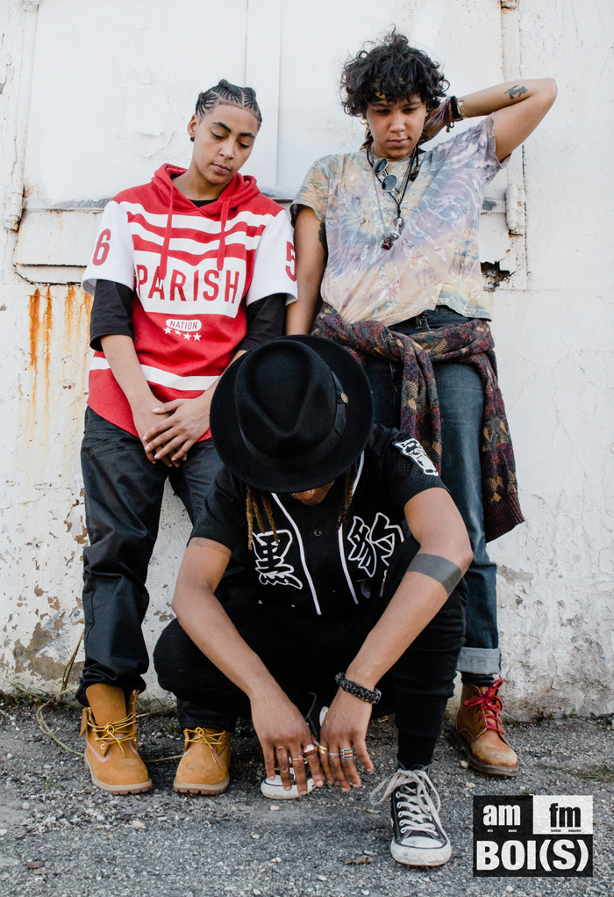
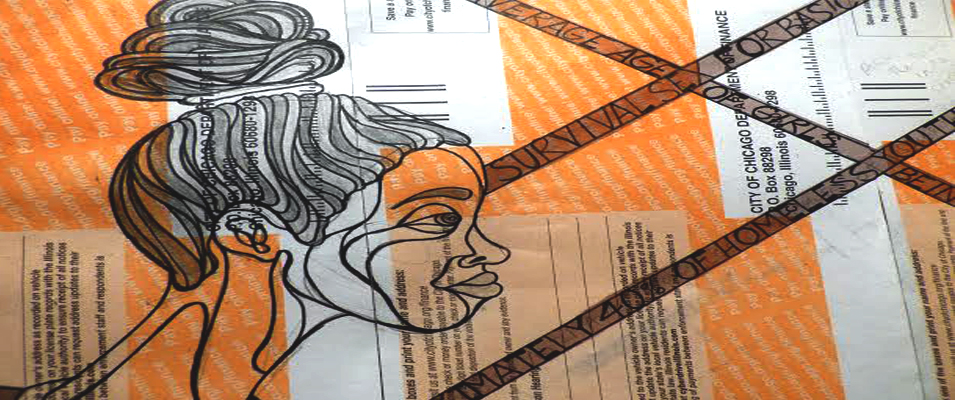
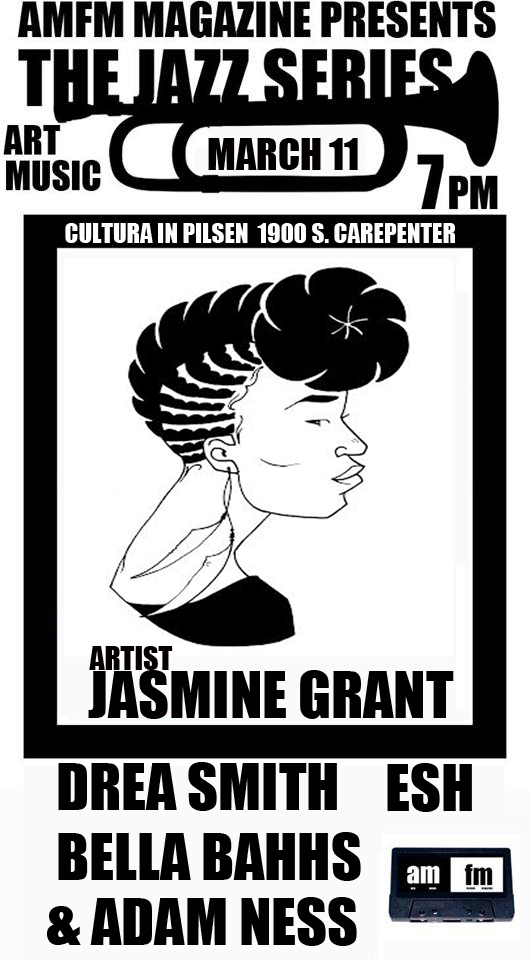

Darius Winfield, better known as D-Win, is always winning - at music, at creative vision, at style, and at Kubrick. The Indianapolis bred emcee came to Chicago with a dream and a mission and hasn’t stopped for anyone or anything. Formerly one half of the hip hop duo The Rocketeers, D-Win is no stranger to the limelight, but it seems he has found his light in himself, particularly through his latest release the Kubrick EP...[read more]
SPECIAL FEATURE:  AMFM x BOI SOCIETY: We Dem Boi(s)
"We Dem Boi(s) Special Feature: AMFM and our friends over at Boi Society teamed up to create "We Dem Bois" to celebrate queer women who are comfortable in their own skin and self. Inspired by the Wiz Kalifah video "We Dem Boys," we have created one just for the bois! Check out the full spread including the music lifestyle video, photo shoot, and Q&A's [here].IN ARTS: Morley
LA based street artist Morley didn’t know much about street art growing up in Iowa. To him street art consisted of illegible scrawls on buildings or street signs. It wasn’t until he went to college in the street art haven of New York that he was exposed to work of that nature that could truly be considered “art.” It also wasn’t until college that Morley ...[read more]IN MUSIC: Angel Haze
If anyone should be rapping “Started From the Bottom,” it should be Angel Haze. The 23-year-old Detroit native, who had a rocky upbringing, grew up homeless, lived in the woods, left their label and leaked their own debut album Dirty Gold, which ultimately could have cost them everything, but what is everything to a person who knows what nothing feels like...[read more]
IN FASHION: Not all diamonds come with blood shed or conflict. One of them is the Austin, Texas based jewelry and design duo “Diamonds Are Evil.” Definitely a name with shock value, but it comes from a place of genuinity. The husband and wife pair are exposing the ills of the diamond industry in a beautiful and sustainable way with their intricate one of a kind wood cut creations...[read more]
IN REVIEWS: Alessia Cara at Metro Chicago
No one was questioning what they were doing at Metro Chicago when Alessia Cara came to town. Cara, who is Canadian, and only 18, rose quickly to stardom after the success of her song “Here,” which talks about the perils of fitting in and adolescence. “I'm sorry if I seem uninterested/ Or I'm not listenin' or I'm indifferent / Truly, I ain't got no business here...[read more] Sam Kirk on “Surviving the Times: An Exhibition on Homelessness and Survival Sex in the LGBT Community”
Multidisciplinary artist, Sam Kirk's recent ongoing project exemplifies the use of art as conversation-starter. The project, “Surviving the Times: An Exhibition on Homelessness and Survival Sex in the LGBT community,” is a series of multimedia artwork as well as a panel discussion on homelessness...[read more]AT THE BLOG: Check out our AMFM blog content too!
We have a page just for quick arts, music and fashion snippets and projects from artists we've featured, and new artists and projects from Rhea The Second, D-Win, and more! We've got some mini Q&A's, artist profiles, submissions from artists, musicians and designers, and some content we feature over on our Tumblr. If you like short and sweet and images, check it out...[read more]IN EVENTS:



{kind=link}